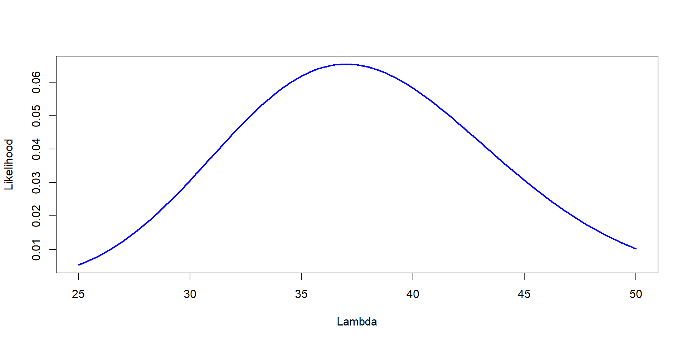
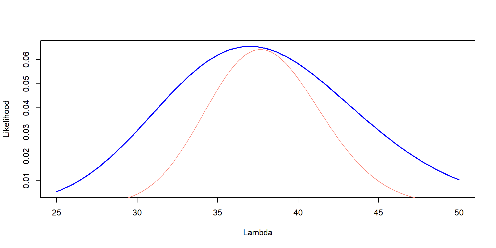
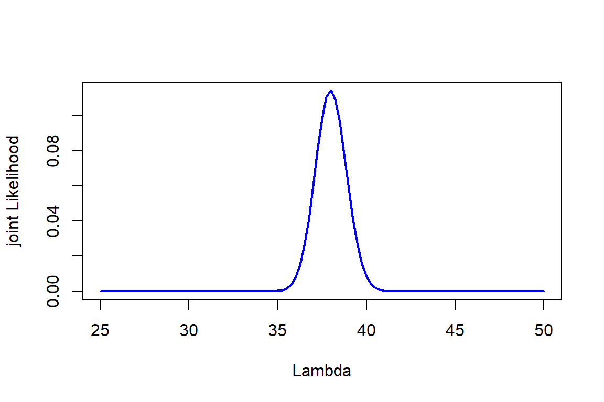
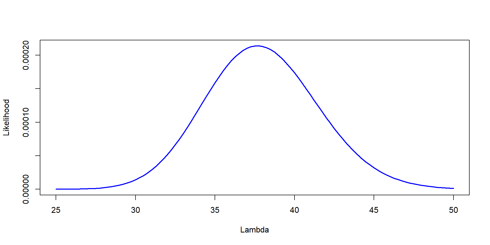
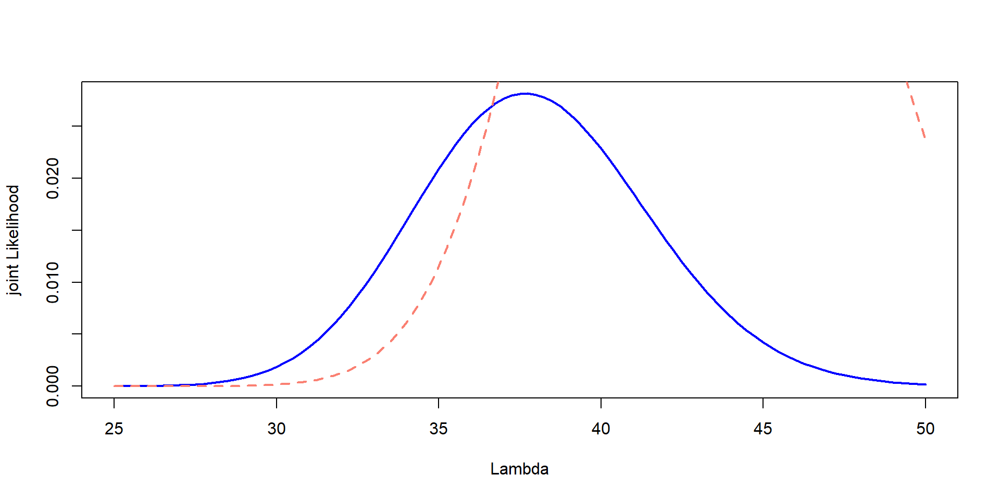
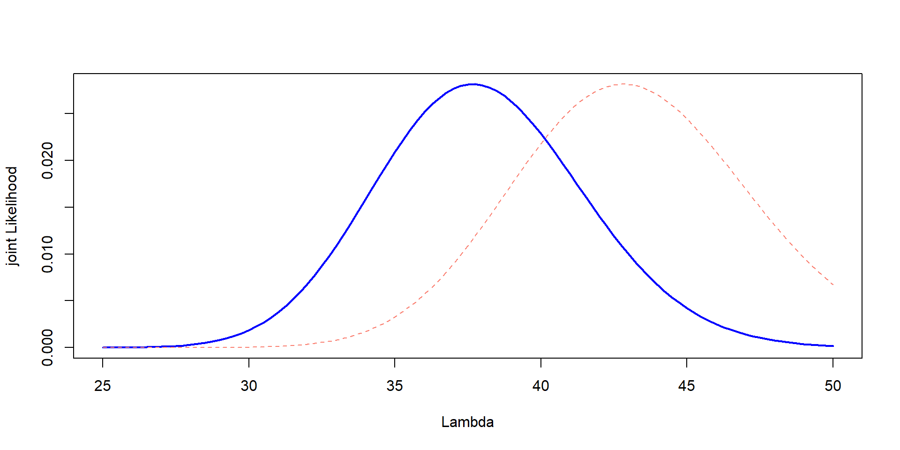
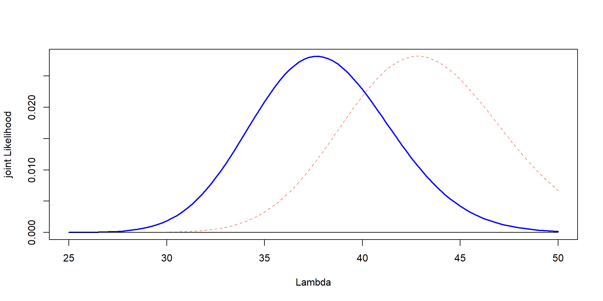
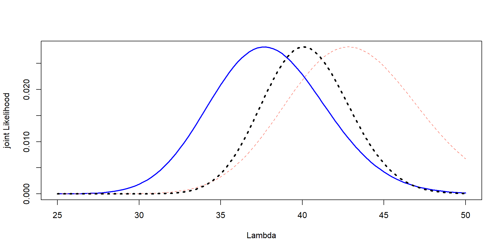
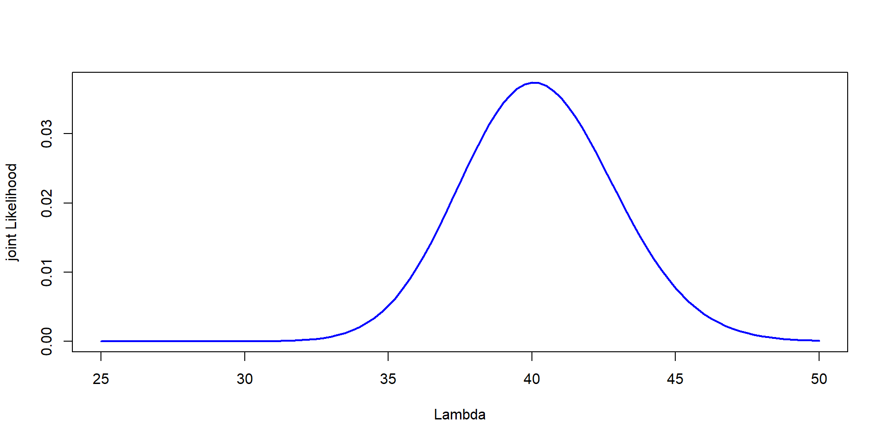

Lambda=seq(25,50, by=0.25)
Likelihood=dpois(37,Lambda)
plot(Lambda,Likelihood,type="l", col="blue", lwd=2,ylab="Likelihood", xlab="Lambda")
A different statistical framework
We have used frequentist so far
| Topic | Frequentist | Bayesian |
|---|---|---|
| Parameters | Fixed unknown | Random variable |
| Data | Random | Fixed |
| Inference | Based on a sampling distribution | Based on posterior |
| Output | P-value, Confidence intervals, betas | Credible intervals and posterior distribution |
| Computational needs | low | high |
Data, random? Yes…
\(y_i = \beta_0 + \beta_1 + \epsilon_i\)
Different way of looking at things… we will explore how
\[ \Huge P(\theta |data) = \frac{P(data|\theta) \times P(\theta)}{P(data)} \]
Challenge 2:
You go to the same Forest, but were able to count three plots. They had 37, 41 and 35 trees. Estimate the Likelihood of different values of \(\lambda\)
The more data, the better!
Likelihood=dpois(37,Lambda)
plot(Lambda,Likelihood,type="l", col="blue", lwd=2,ylab="Likelihood", xlab="Lambda")
Likelihood=dpois(37,Lambda)*dpois(41,Lambda)*dpois(35,Lambda)
plot(Lambda,Likelihood,type="l", col="blue", lwd=2,ylab="Likelihood", xlab="Lambda")
In this case:
\[ \mathcal{L} = P(X_1 = 37 | \lambda) \times P(X_1 = 41 | \lambda) \times P(X_1 = 35 | \lambda) \]
In general:
\[ \mathcal{L}(x_1, x_2, ...,x_n) = \prod_{i=1}^n P(X_i = x_i | \lambda) \]

forest object with counts of 50 plots
Lambda=seq(25,50, by=0.25)
Likelihood=sapply(Lambda, function(l) prod(dpois(forest, l)))
scaled_Likelihood<-Likelihood/sum(Likelihood)
plot(Lambda,scaled_Likelihood,type="l", col="blue", lwd=2,ylab="joint Likelihood", xlab="Lambda")
\[ \Huge P(\theta |data) = \frac{P(data|\theta) \times P(\theta)}{P(data)} \]
Before talking about priors, I want to tell you all a story
I saw a rabbit
I saw a fox
I saw a cougar
I saw a platypus
So… Likelihood would be the same.
\[ \mathcal{L}(statement = true\ \ | \ \ \text{my thrustworthy professor told me}) \]
In each of the four cases, I told you I saw it (think of this as data)
So, why did you believe me some times and not other times?
Priors!
The prior distribution provides un with a way of incorporating information about \(\theta\) (population parameter) in our analysis
You check the score: the Browns are up 21 to 7 at halftime against the Ravens. In frequentist probability, you would think:
“Probability of winning when going 21-7 is about 80%”
\[ \text{Posterior belief} \propto \text{Prior (they find ways to lose)} \times \text{New data (they’re winning now)} \]
Essentially, you know that they tend to find ways to lose
You may be expecting heartbreak, despite the data (21-7)
Your weather app says that there is 5% of rain
You get out, and t is overcast, cloudy, and windy… you may get your umbrella
Previous studies / historical data
Mechanistic limits
Theoretical expectations derived from other models
Expert knowledge
Previous observations
\[ \Huge P(\theta |data) = \frac{P(data|\theta) \times P(\theta)}{P(data)} \]
Lambda=seq(25,50, by=0.25)
Likelihood=dpois(37,Lambda)*dpois(41,Lambda)*dpois(35,Lambda)
plot(Lambda,Likelihood,type="l", col="blue", lwd=2,ylab="Likelihood", xlab="Lambda")
This is the Likelihood
\[ P(\theta | data) = \frac{P(data|\theta) \times P(\theta)}{P(data)} \]
Joint Likelihood: We need to multiply it by the priors
A prior study (one year ago), you counted trees per plots. And found a mean of 39.9 and a sd of 6.75
There are specific methods (momentum matching) to transform priors.
For normal:
For counts:
\(\lambda \sim \gamma(\alpha, \beta)\)
\(\beta = \frac{\mu}{\sigma^2}\)
\(\alpha = \mu \times \beta\)
That’s it!
Likelihood:
A prior study (one year ago), you counted trees per plots. And found a mean of 43.2 and a sd of 4.05
plot(Lambda,Likelihood_scaled,type="l", col="blue", lwd=2,ylab="joint Likelihood", xlab="Lambda")
lines(Lambda, prior, col="salmon", lty=2,lwd=2)
Issue! They are in different scales
But… we can change the scaling,just for plotting!!
prior_scaled <- prior * max(Likelihood_scaled) / max(prior)
plot(Lambda,Likelihood_scaled,type="l", col="blue", lwd=2,ylab="joint Likelihood", xlab="Lambda")
lines(Lambda, prior_scaled, col="salmon", lty=2)
\[ P(data|\theta) \times P(\theta) \]
Multiply them! The original numbers!
That’s it! We have our joint Likelihood!
It is in different scales!

jointL_scaled <- jointL * max(Likelihood_scaled) / max(jointL)
prior_scaled <- prior * max(Likelihood_scaled) / max(prior)
plot(Lambda,Likelihood_scaled,type="l", col="blue", lwd=2,ylab="joint Likelihood", xlab="Lambda")
lines(Lambda, prior_scaled, col="salmon", lty=2)
lines(Lambda,jointL_scaled, lwd=3, lty=3)
\[ P(\theta | data) = \frac{P(data|\theta) \times P(\theta)}{P(data)} \] \(P(data)\) is the marginal likelihood
The point of the maginal likelihood is “standardizing” the joint likelihood
This way, the area under the curve sums to 1.

That is the result
No point estimate. It models “uncertainty”
Median is usually reported
You can estimate 95% of the area under the curve –> credible intervals
You are surveying bats near a beach. You set up one mist net and caught 8 bats
From previous surveys, you know that the mean catch per net is around 10 bats, with a standard deviation of around 3 bats
Estimate Likelihood, prior, combine them (joint) and estimate the posterior (normalized so that it sums to 1)
Plot all three on the same graph: likelihood, prior, and posterior –> Scale the prior and likelihood if necessary so they fit on the same plot
Find the most probable value of \(\lambda\)
Download JAGS